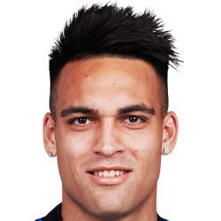
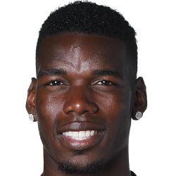
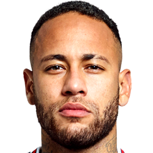

- Nacionalidad: Argentina
- Edad: 24 años
- Club: Inter (Italia)
- Posicion: Delantero centro
Algunos de nuestros jugadores representados:
Lautaro Martinez
Acompañamos a Lautaro desde su etapa amateur en Liniers de Bahía Blanca, donde en el año 2014 lo llevamos a Racing Club de Avellaneda y ese mismo año firma contrato. Lautaro tiene un excelente desempeño en las inferiores y llega a primera donde se destaco desde el primer momento. En 2018 fue la venta mas cara del club y se mudo al Inter de Milán. Jugador de elite.
Paul Pogba
Con Paul estamos juntos desde 2013 cuando jugaba en Juventus y con problemas personales con su ex representante decidi contactarse con nosotros. Siempre un placer contar con jugadores como él, nada mas ni nada menos que un "Campeon del Mundo"(2018).En 2016 logramos que Paul vuelva al Manchester United club en el cual surgió y deseaba volver.
Neymar Jr
Que les podemos contar de Ney, en 2011 cuando su nombre explotaba en el futbol mundial su padre se contacto con nosotros, en 2013 concretamos la firma de Neymar en el FC.Barcelona, luego de convertirse en una mega estrella del futbol en 2017 contactamos con PSG generando la venta mas cara de la historia del futbol.
Gonzalo Higuain

Gonzalo es un goleador de sangre, desde 2016 estamos juntos. Con su llegada a Juventus y luego su pase al Milán donde tuvo excelentes resultados. En 2019 con ganas de cambiar de aire y conocer ligas nuevas llegamos a un acuerdo con el Chelsea (uno de los grandes de Inglaterra). Desde el 2021 el Pipa decidio bajar un poco la exigencia y firmamos con el Inter de Miami donde hoy es la estrella.